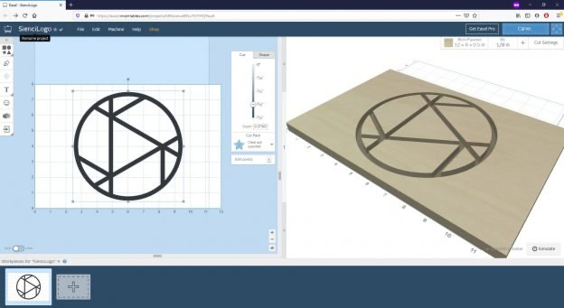

Step 2. CAM the carver¶
"turn your drawing into a toolpath for carving"

What is this step?¶
CAM stands for Computer-Aided Manufacturing. This step is the "translator." It takes your CAD drawing (the .svg file) and translates it into instructions for the CNC machine.
You use CAM software (we use Easel) to tell the machine how to carve your design. You will define what kind of cutting bit you're using, how deep to cut, and how fast to move. The CAM software then calculates all the specific X, Y, and Z movements, called toolpaths, and exports them as G-Code.
Key Vocabulary¶
- CAM (Computer-Aided Manufacturing): Software that turns a design file into machine instructions.
- Easel: The free, browser-based CAM software we will use.
- Toolpath: The calculated path the cutting bit will follow to carve your design. You will see this as a blue line in the Easel preview.
- G-Code: The programming language for CNC machines. It's just a long list of coordinates and commands, like
G1 X50 Y10 Z-1. You don't need to write G-Code, the CAM software does it for you! - Bit (or End Mill): The cutting tool that goes into the CNC router. They come in many shapes and sizes.
Workflow Steps¶
- Sign Up for Easel: Go to Easel (easel.inventables.com) and create a free account.
- Start a New Project: Click "New Project" in Easel.
- Set Material: In the top-right, set your material type (e.g., Softwood, Plywood) and its exact dimensions (Length, Width, and Thickness).
- Use Material:
Pine, Width:12 in, Length:12 in, Width:0.75 in
- Use Material:
- Set Bit: Tell Easel what bit you are using (e.g.,
1/8" Up-Cut). This is critical for an accurate cut. -
Review the Speed and Feed Settings
- In Automatic Mode Easel will set all the speed and feed settings based on your CNC machine, material, and bit*
- Below are typical settings for our beginner projects with
Softwoodand1/8" (3.175mm) upcut bit. Check Easel'sCut Settingsare very similar, and if not double-check what machine, material, and bit you selected above!
Setting Masuter Pro Masuter 3S RPM 12,000 12,000 Feed 900.0 mm/min 1540.0 mm/min Depth of Cut 0.80 mm 2.20 mm Stepover 1.27 mm 1.27 mm Plunge 450.0 mm/min 770.0 mm/min - For different materials or bits you will need to use different speed and feed settings.
- Easel should automatically determine settings.
- --Or-- use the online calculator found at: OnlyCNCs.com.
- Use this login:
steam@imaginedesignmake.com, password:Gobraves#4358 - HCS machine:
FoxAlien 4040 Masuter Pro,60/70W Spindle - Mr. Ben's machine:
FoxAlien 4040 Masuter 3S,400/500W Spindle
- Use this login:
- Import Your SVG: Go to
File > Import > SVGand select the.svgfile you created in the CAD step. - Place and Size: Move and scale your design on the digital material to where you want it.
- Set Cut Depths: Click on your design elements and use the "Cut" tab to set how deep you want to carve. Do you want to go all the way through or just engrave the surface?
- Simulate! This is the most important step. Easel shows you a 3D "Digital Preview" of what the final carve will look like. Always check the simulation to make sure it looks correct.
- Export G-Code: When you are happy with the simulation, click the "Carve" button (top right). Since we are using a different program to control the machine, you will then:
- Click "Advanced".
- Click "Generate G-code".
- Click "Export G-code". This will download a file with a
.ncor.gcodeextension. This is the file we need for the next step.